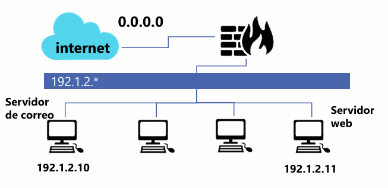

ACTIVIDAD 04 — Mecanismos de defensa en red
Reglas de iptables basadas en “política restrictiva” y permitiendo únicamente tráfico requerido. (Reglas tomadas del documento original).
1) Introducción 2) Desarrollo técnico 3) Multimedia 4) Reflexión 5) Referencias1) Introducción contextual al tema
Un mecanismo esencial de defensa en red es el control de tráfico a través de un firewall. En Linux, iptables permite definir políticas y reglas para aceptar o bloquear paquetes, reduciendo la superficie de ataque. El enfoque recomendado es deny by default: bloquear todo y permitir solo lo necesario.
En esta actividad se implementa una política restrictiva y reglas para habilitar servicios típicos: DNS (saliente), SMTP (correo entrante/saliente para un servidor) y HTTP (servidor web y navegación).
2) Desarrollo técnico de la actividad
2.1 Política restrictiva (DROP por defecto)
Se establece una política “default deny” para evitar tráfico no contemplado.
iptables -P INPUT DROP
iptables -P FORWARD DROP
iptables -P OUTPUT DROP2.2 Permitir tráfico ESTABLISHED,RELATED
Con esto se permite el tráfico de respuesta de conexiones ya establecidas o relacionadas.
iptables -A FORWARD -m state --state ESTABLISHED,RELATED -j ACCEPTSi solo permites “NEW” pero no permites “ESTABLISHED,RELATED”, se romperán respuestas (por ejemplo, el retorno de HTTP/DNS). Este match mantiene la comunicación funcional sin abrir de más.
2.3 DNS saliente (TCP) desde la red local
Permite consultas DNS hacia Internet desde la red 192.1.2.0/24 al puerto 53/TCP.
iptables -A FORWARD -p tcp -s 192.1.2.0/24 --dport 53 \
-m state --state NEW -j ACCEPTNota técnica: comúnmente DNS usa UDP/53; aquí se trabajó TCP/53 según la actividad.
2.4 Correo entrante (SMTP) hacia servidor
Permite correo entrante desde Internet hacia el servidor de correo 192.1.2.10 por 25/TCP.
iptables -A FORWARD -p tcp -d 192.1.2.10 --dport 25 \
-m state --state NEW -j ACCEPT2.5 Correo saliente (SMTP) desde servidor
Permite que el servidor de correo (192.1.2.10) envíe correo hacia Internet por 25/TCP.
iptables -A FORWARD -p tcp -s 192.1.2.10 --dport 25 \
-m state --state NEW -j ACCEPT2.6 HTTP entrante hacia servidor web
Permite conexiones HTTP desde Internet hacia el servidor web 192.1.2.11 por 80/TCP.
iptables -A FORWARD -p tcp -d 192.1.2.11 --dport 80 \
-m state --state NEW -j ACCEPT2.7 HTTP saliente desde red local hacia Internet
Permite que la red local 192.1.2.0/24 navegue (HTTP) hacia Internet por 80/TCP.
iptables -A FORWARD -p tcp -s 192.1.2.0/24 --dport 80 \
-m state --state NEW -j ACCEPTEn escenarios reales, además de permitir 80/TCP, normalmente se habilita 443/TCP (HTTPS), se agregan reglas de LOG para intentos bloqueados, y se implementa NAT si el firewall es el gateway.
3) Material multimedia

Ruta esperada:
./servidor.png (en la raíz del proyecto).
4) Opinión o reflexión técnica del estudiante
La defensa en red más efectiva no es “permitir todo y bloquear lo sospechoso”, sino lo contrario: bloquear todo y permitir solo lo que se necesita. Esta actividad demuestra cómo una política restrictiva combinada con filtrado por estado mantiene funcionalidad y reduce ataques, porque limita puertos expuestos y restringe el tráfico a servicios concretos.
En escenarios reales, este enfoque se complementa con segmentación (VLAN/DMZ), monitoreo (LOG/SIEM), y buenas prácticas como usar HTTPS, limitar SMTP, y aplicar NAT en gateways. Una configuración simple pero ordenada puede marcar la diferencia ante escaneo, intentos de explotación y tráfico no autorizado.
5) Referencias técnicas
- Linux man pages: iptables(8) y módulo state / conntrack (NEW, ESTABLISHED, RELATED).
- Netfilter Project: documentación oficial de tablas, cadenas y flujo de paquetes.
- Buenas prácticas de firewalling: enfoque “default deny” + allow-list por servicio.